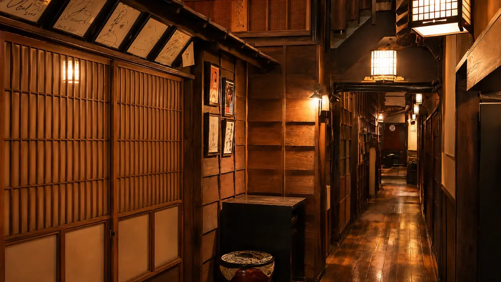

― ブランドストーリー ―
樞とは、
扉と柱をつなぐ
小さな軸のこと。
「樞」は、かつて扉の開閉を支えた回転軸を指す古い言葉。 店と客、客と客、料理人と素材──そのあいだに立ち、静かに巡らせる軸でありたい。 そう願って、名駅四丁目で二十余年、暖簾を上げ続けています。
主役は、愛知県が誇る純系名古屋コーチン。 弾力ある身、深い旨み、濃厚な玉子。 一羽を鍋に、刺に、炙りに、揚げに、そして〆のご飯ものへ。 捌きと火入れを丁寧に整え、一夜の流れとしてお出しします。
― 樞 名駅店 ―
